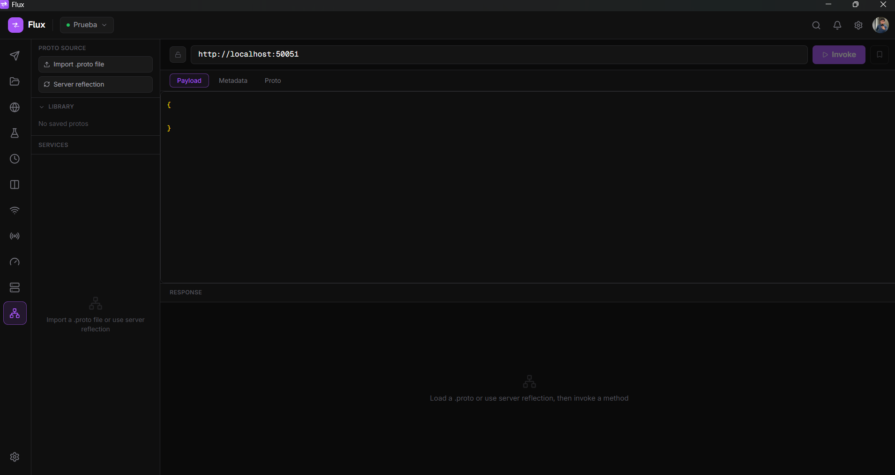
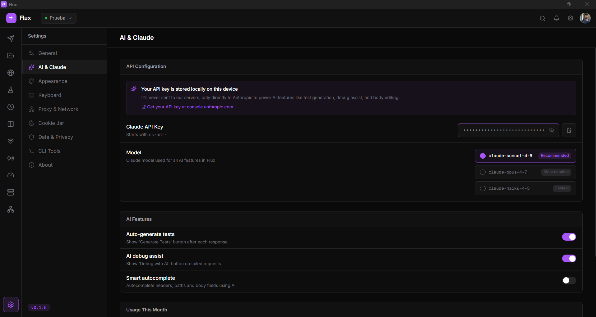
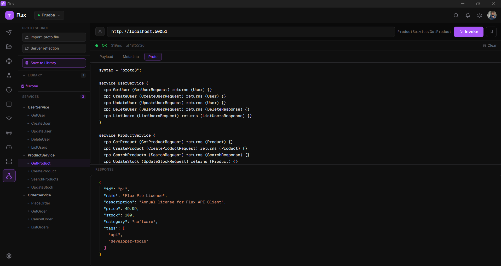
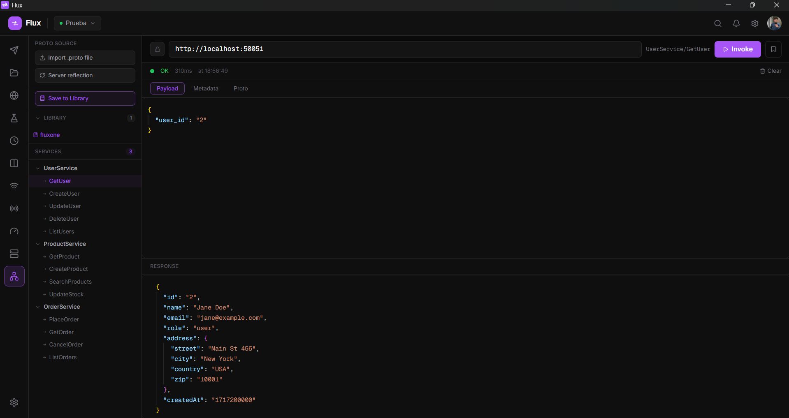
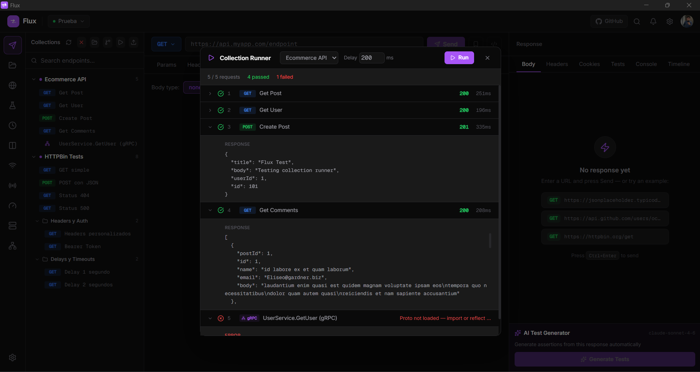
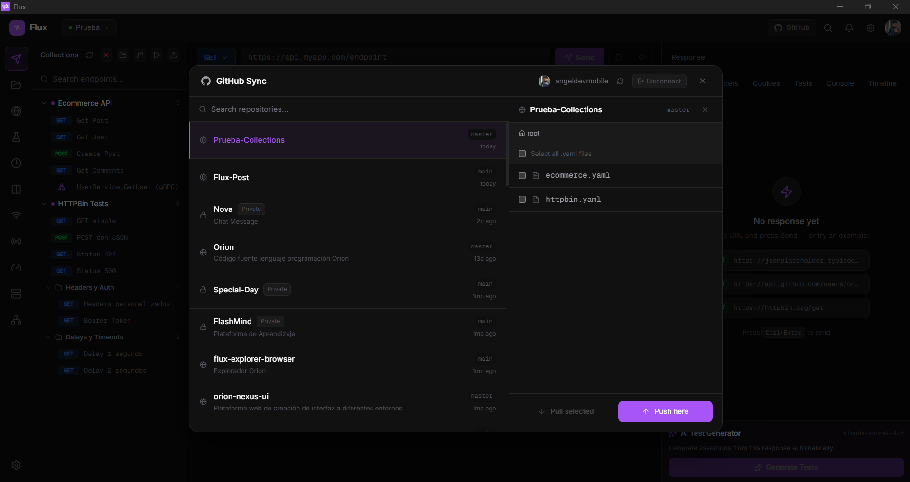

Request forbidden by administrative rules.
Make sure your request has a User-Agent header.
Flux, API Client

Built with Rust. Under 30 MB RAM. No Electron. Free account, sign up with email or GitHub.
Most API clients are Electron wrappers consuming hundreds of MB of RAM. Flux is different and the difference is obvious from the first request.
Most API clients bundle a full Chromium engine and Node.js runtime. Flux is built with Tauri and Rust, a true native binary with no web runtime overhead.
< 30 MB RAM · ~ 5 MB installerOther tools need third-party integrations for load testing and mocking. With Flux, both are native features , no extra installs, no Docker, no config files.
AI · Load Testing · Mock ServerMany API clients route your data through their cloud by default. Flux stores everything locally. A free account is required (email or GitHub), cloud sync is opt-in and uses your own Supabase instance, you own your data.
Free account · No vendor lock-inWhether you're building APIs, testing them under load, or mocking a backend that doesn't exist yet.
Test APIs as you write them. AI-generated assertions catch regressions before they reach production.
Run load tests, validate environments side-by-side, and wire your test collections into CI/CD, with no extra tools.
No subscriptions, no cloud accounts, no vendor lock-in. Spin up a mock server in one click while the backend is still being built.
No setup, no config files, no Docker. Open Flux and start testing.
AI Debug Assist explains the error in Flux terms and offers instant Apply buttons. Click one and the fix is added directly to your request, no copy-pasting, no tab switching.
Click any feature to see the actual interface, no mockups, no illustrations.

{{BASE_URL}} anywhere in URLs,
headers and body. Switch instantly from the top bar.



.proto files,
browse your service/method tree, edit payload and metadata in Monaco, and invoke directly. Responses arrive
as formatted JSON, no grpcurl, no Bloom RPC needed.
Flux is a desktop API client built for speed and simplicity. It runs natively on Windows, macOS and Linux with no Electron overhead. Your data stays local by default, cloud sync is optional and runs on your own Supabase project.
From basic HTTP requests to AI-generated tests, load testing, local mock servers and cloud sync, all in one native desktop app under 30 MB of RAM.
status == 200, body.id != null, duration < 500Flux does not include an API key. You must provide your own Claude API key from Anthropic. It is stored only on your local device and is never sent to Flux servers every AI call goes directly from your machine to Anthropic's API.
To enable: open Settings → AI & Claude, paste your key
(starts with sk-ant-) and choose a
model. Get your key at console.anthropic.com/account/keys. Usage
is billed by Anthropic directly on your account.
.proto files into
a persistent library, reuse them across any request without re-importing/api/users/* matches any
sub-pathFrom importing a .proto to invoking a method and
saving it to a collection, everything runs inside Flux with no external tools.

.proto file
once and it becomes available to every gRPC request. The library persists across sessions, no need to
re-import per request.



gRPC pill so you can tell them
apart at a glance.

Download Flux, open it, and follow these steps to make your first request and explore the features.
Type any URL in the top bar, select a method from the dropdown, and press Ctrl+Enter (or the Send button). The response, status, headers and body, appears in the right panel instantly.
Click the + button in the left sidebar to create a collection, then use Ctrl+S to save the current request into it. Organize requests in named folders by dragging them.
Open the Environments tab, create an environment (e.g. Development) and add a variable like BASE_URL = https://api.example.com. Reference it anywhere as {{BASE_URL}}, in URLs, headers and body.
In the Tests tab of any request, add assertions like status == 200 or body.id != null. After sending, each assertion shows pass or fail. Use Generate Tests with AI for a one-click suite from the response.
Go to Settings → AI & Claude, paste your Claude API key (starts with sk-ant-). This unlocks test generation, debug assist on errors, script editing and batch failure analysis.
Click the import button in the Collections sidebar to paste a Postman v2.1 JSON, an OpenAPI 3.x spec, or a cURL command. Flux converts it to a collection automatically.
Open the Mock Server tab from the left nav. Add endpoints (method, path, status, body), set a port and
click Start. Your local server is live at http://localhost:3001
instantly
no Docker, no config files.
Open the gRPC tab from the left nav. Click the proto library icon to import your .proto file, it stays saved
for future sessions. Select your service and method, write the JSON payload, and click Invoke. Save the
request to a collection with Ctrl+S to reuse it later alongside HTTP requests.
Open the Load Test tab, set total requests and concurrency, and click Run. Watch the live progress bar and see min / avg / P95 / P99 latency, throughput and error rate the moment the test finishes.
Download the installer for your platform and run it. No dependencies, no runtime, no administrator rights required on Windows.
sudo dpkg -i Flux_x.x.x_amd64.deb
chmod +x Flux_*.AppImage, then
run it directly.Every common action has a shortcut. Open the command palette with Ctrl+K to search and discover all available commands.
Quick answers to what people ask most.
Three reasons, each on its own makes it non-negotiable:
How to set it up
Open Settings → AI & Claude, paste your key (starts with
sk-ant-), and pick a
model. Get your key at console.anthropic.com/account/keys.
Your API key is stored only on your local device using the OS secure storage. It is explicitly excluded from cloud sync, even if you sign in to sync your collections, the key never leaves your machine.
Request bodies, response bodies, and everything you send through Flux goes directly from your device to the target server (or to Anthropic when using AI features). Flux has no relay server in the middle.
Flux itself is free. The only cost is what Anthropic charges for the API calls you make, billed directly to your Anthropic account. In practice, typical developer use (generating tests, debugging errors) costs a few cents per month, AI calls in Flux are short, focused prompts, not long conversations.
You can monitor your exact usage at console.anthropic.com/usage.
The cheapest model (Haiku) is recommended for everyday use; switch to Sonnet when you
need deeper reasoning.
Yes, all core features work without an internet connection: sending HTTP requests, running tests, the mock server, load testing, environment variables, code snippets, and the CLI runner. The only features that require a connection are the AI functions (which call Anthropic's API) and cloud sync (optional).